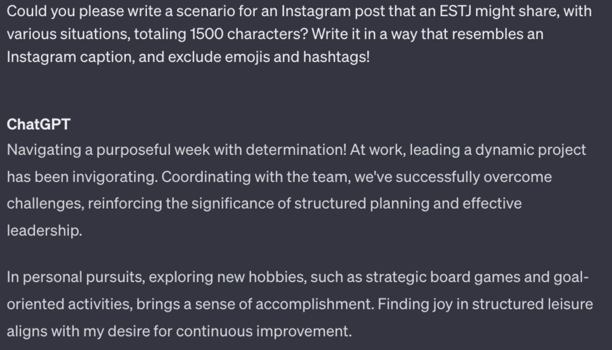

| type | posts | |
|---|---|---|
| 1 | ENTP | 'I'm finding the lack of me in these posts ver... |
???
심재인
Department of Statistics, Jeonbuk National University
Outline
Introduction
Introduction of Data
Proposed Method
Realdata Analaysis
Introduction
Research Topic
- The primary focus of the study is to evaluate the meaning and value of the text generated by GPT. In order to conduct an analysis on the collected ChatGPT generation data, the following detailed research questions have been formulated.
Introduction
- Research Method:
- To conduct the research, the following methods will be employed:
- The model will be trained and evaluated using only real data. This will serve as the initial benchmark.
- Data collection using ChatGPT.
- To conduct the research, the following methods will be employed:
양오석(Oh Suk Yang);신승렬(Seung Ryeol Shin). (2023). ChatGPT와 딥러닝 알고리즘의 기능 비교. 한국커피문화연구, 9(1), 77-108.
Introduction
Research Motivation
- The performance of such similarities is the driving force behind our research. If the generated data is similar to real data, there is a need to explore how models like ChatGPT can leverage this capability to generate useful data.
- The objective is to delve into this similarity, examining it closely and developing methods for utilizing generated data in real-world scenarios.
Introduction
Introduction to ChatGPT
ChatGPT is a language model developed by OpenAI, functioning as an interactive artificial intelligence for conversation.
Its primary capabilities lie in natural language understanding and generation. Leveraging the provided data, this model can respond to questions on various topics, engage in conversation, and generate sentences, paragraphs, or entire pieces of text.

Introduction of Data

Introduction of Data


Generated Data: This dataset is crafted to be written like real data, allowing ChatGPT to generate sentences based on given situations for each MBTI.
Introduction of Data

Introduction of Data
Verification of Similarity:
kaggle에서 수집한 ESTP 데이터
Splinter Cell Blacklist for Xbox 360. If you get hated on then it’s because you as a person have something to work on. I often come off to people with the opposite of my intention, if I don’t listen to my gut. Sometimes I over think my natural social skills and come off as a sarcastic douche.
ChatGPT로 생성한 ESTP 데이터
Today, I had a fantastic experience enjoying adventures in nature! Hiking up a tall mountain, I experienced the beauty of the great outdoors. The view from the summit was absolutely breathtaking. Adventures like these always bring new challenges and a sense of accomplishment, so I want to do more of them!
Guinn, Curry. “Assessing Author Personality Types Using ChatGPT.”
Proposed Method

Proposed Method
Title: GPT Data Collection Process
Data Collection Process:
Define the MBTI for Performance Measurement.
Define the Topic: Clearly define a topic for ChatGPT, presenting scenarios such as traveling to a destination or being invited to a friend’s birthday party. Request predictions on how one might post on Instagram in such situations.
Setting such conditions helps define the scope of generated data, preventing responses from being too similar.
Utilizing the GPT model, automatically generate posts for each MBTI personality type based on the given topics and conditions.
Responses vary and are diverse depending on the identified MBTI when conditions are provided.
Review the initially generated data and adjust conditions as needed to align with research objectives.
Modifications were made to the generated content to better fit the research goals. Specifically, for an Instagram-like post, the MBTI and emoji included in the original sentence were removed as requested.
Additionally, adjustments were made to ensure the character count per question is around 1,500 aiming for a balance similar to real-world data.
This process aimed to enhance the quality of the data, and the selected data was finalized.
Proposed Method
Challenges in Data Collection
Challenges in Data Collection
Class Name


Challenges in Data Collection
Emoji


Challenges in Data Collection
Variation in Generated Text Length

Challenges in Data Collection
Outcome Analysis
Realdata Analaysis
실험결과 제시
슬라이드 6.
결과분석 ~
슬라이드 마지막
- 결론 및 토의